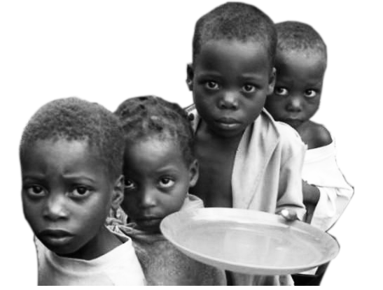
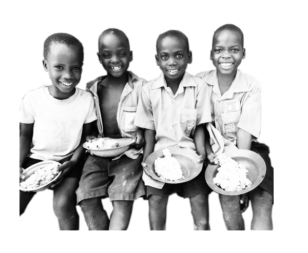

795 million people around the world are suffering from hunger and starvation. How can we solve such a disparity?
Feed My Starving Children is a Christian non-profit that provides nutritionally complete meals specifically formulated for malnourished children. They supply meals to over 60 countries worldwide that help kids get the healthy food they need in order to grow and become productive students in school and society.
To this day, FMSC has served over 1.8 billion meals worldwide. This number coninues to grow everyday as families around the world are being helped from the grips of starvation.
FMSC exists because of volunteers just like you who generously give their time and energy to feed starving children in desperate need around the world. YOU are an essential part of FMSC. Last year alone there were 1,098,094 volunteers who sacrificed their time to help those in need.